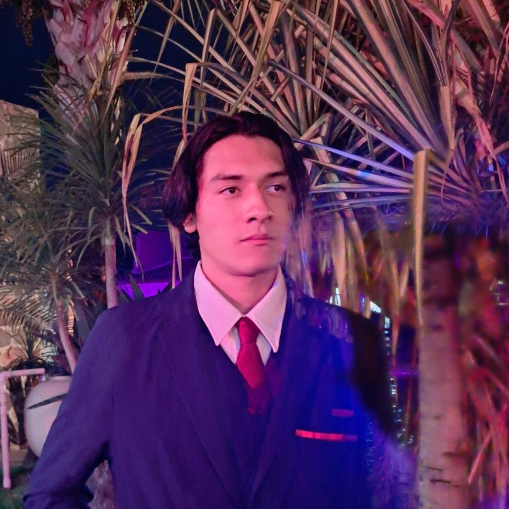

Tapir Industries
Bienvenido a la página de los fundadores. Aquí encontrarás la visión, valores y compromiso del equipo que da vida a cada servicio. Tapir Industries nace desde la premisa de ofrecer soluciones tecnológicas personalizadas, con un enfoque cercano y humano, para satisfacer las necesidades de nuestros clientes. El proyecto ya era una idea entre los socios fundadores, pero fue en 2023 cuando se formalizó y se consolidó como un taller comprometido con la excelencia y la innovación en sus procesos. Es un proyecto con mucho cariño que aunque no nos da de comer, nos llena de satisfacción y nos motiva a seguir creciendo y mejorando como profesionistas cada día. Y nuestro eslogan totalmente nos representa...
"Soluciones a tu medida y más cerca de T.I."
